Meeting Minutes
How NASA uses a wiki to reduce email
A brief history
NASA Flight Operations is the group of people who
- Plan human spaceflight missions
- Train astronauts
- Support astronauts during their missions via Mission Control Center (MCC)
Groups
This directorate is split into about 20 groups
We're in the Extravehicular Activity (EVA) group
(NASA-speak for "spacewalks")

How We've Always Done It
Mission operations has been evolving
from the 1960s
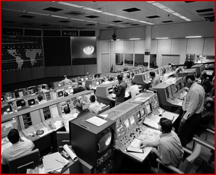 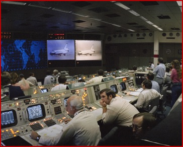 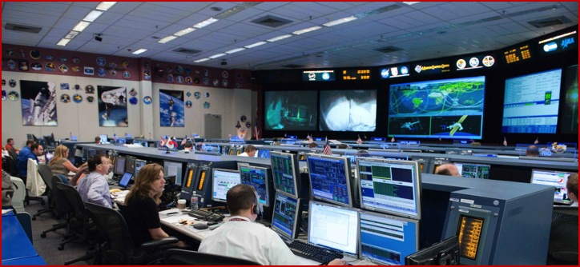to today
Folder Structures
What began as paper folders of typed documents ...
Grew to gigabytes of electronic folders
This led to problems
Directory trees are difficult to search
Multiple copies and versions of documents
- Which one do I trust?
- Do I have to update all of them?
Files are easily moved or deleted
The "Wiki Way"

- Search, don't sort
- Search content, not just file names
- A single portal for information
- Automated revision control
- Semantic linking
An example
Hardware has many associated details
- Part #
- Mass
- Dimensions
These can be stored as semantic properties
An example
and associated documents and database entries
- Drawings
- Schematics
- Anomaly reports
- Compatible hardware
These can be automatically linked by part number or hardware name in some cases
Culture Shift
One of the biggest hurdles for the transition to using a wiki is convincing the group to change the way they think
Proof of Concept
We are required to review lesson plans, rules, and documents every 2 years. Since we were already editing and reviewing these documents, we imported that content into the wiki.
Going Semantic
After installing Semantic Mediawiki, the wiki really shed light on issues we had in our current knowledge management system, whether it was identifying holes in our knowledge or identifying conflicting resources of data
We couldn’t find any other software that came close to the power this had in allowing us to interconnect pages and data through the use of queries and properties within the wiki
Critical Mass
Once a critical mass was achieved, a demo was presented to management
There is a double standard for wikis
The wiki makes info easier to access, edit, and share
- Initially this was viewed as a negative by management
- Can the wiki be trusted?
There is a double standard for wikis
Sharepoint and share-drive documents were just as vulnerable to revisions or access-control issues
... but the wiki makes it easier to discover disconnects already present in the data and it provides automated version history
Demonstrating Value
To get management buy-in, we had to demonstrate value
The wiki provides a single source for information
The wiki reveals gaps in our knowledge base
This model promotes group ownership of our knowledge base ("Our wiki")
Imagery
NASA’s Imagery Online Database hosts institutional and mission imagery related to Human Space flight and associated Activities
IO consists of 100,000 videos and over 2 million photos. The imagery Collection is 10 TB and growing.
Imagery
We wanted a way to incorporate the imagery database without the user leaving the wiki page and also be able to organize the photos in our own way
We built templates and queries to make use of this database. By using the unique NASA photo id# or file name, we can import images into a wiki page.
Image Gallery of EVA Tools
This page makes use of images uploaded to the wiki and images hosted on the IO web site

Mission History
We created a page for each ISS and Shuttle mission. In each page, we set semantic properties for each crew member, flight controller, and relevant hardware item.

Mission History
We can then query for data ...
{{#ask: [[Category:Expedition]]
|Mainlabel=Expedition
|? Commander
|sort = Mission start date
|order = asc
}}
Mission History
... and we can elegantly display this data on any page

Inventory Management
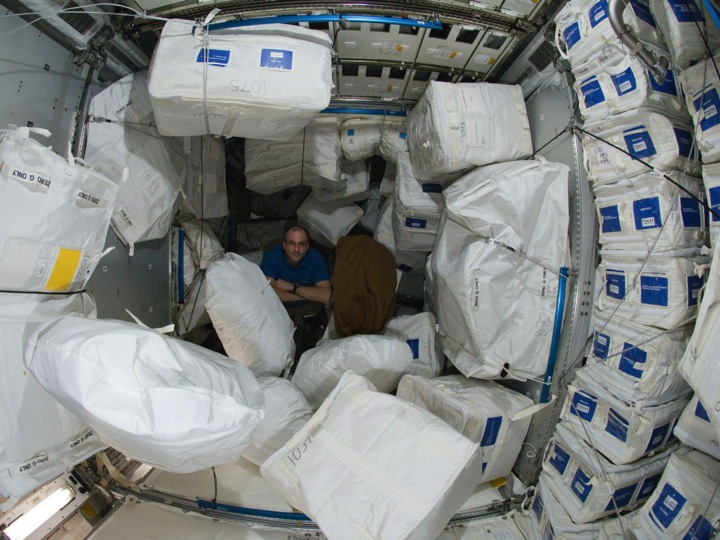Inventory Management
NASA uses a parent-child relationship structure to document the location of each item on ISS
Inventory Management
The client interface can be overwhelming
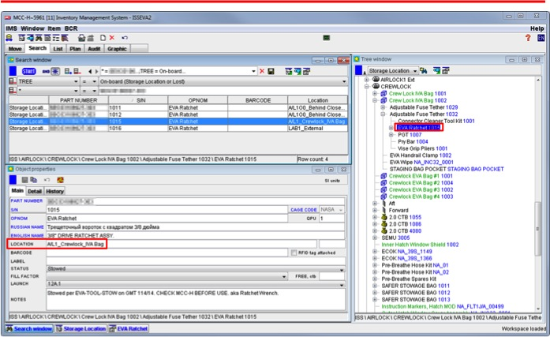Inventory Management
The web search feature is simpler

Inventory Management
But we can tie this data into our wiki
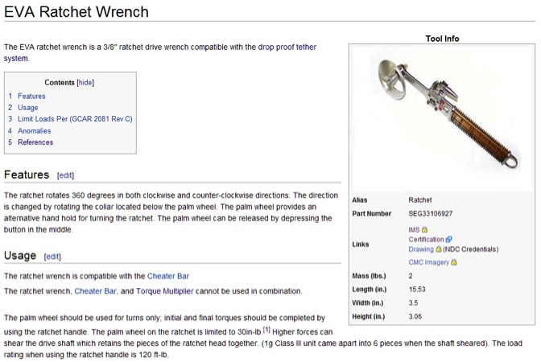Inventory Management
Input a part number ...
{{#ims: ABC1234567-123}}
Meeting Minutes
or ...
How we learned to stop emailing and love the wiki
Email!

Email is necessary but abused
Email is good for conversations but a terrible way of storing data
Eliminate email?
We can't completely get rid of email
but maybe we can reduce it
The Meeting Minutes Template
- Meeting Title
- Date
- Time
- Attendee
- Links to documents
- Topics
- Title
- Content
The Meeting Minutes Form
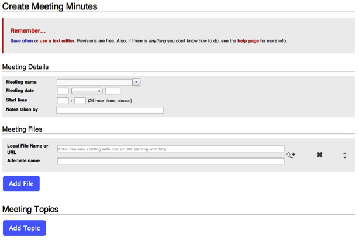Meeting Topics
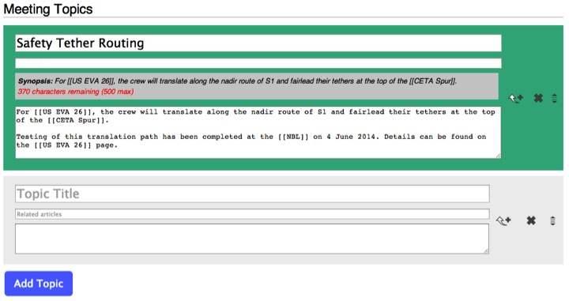Meeting Minutes Output

Meeting Minutes
- Can be entered by anyone
- Are linkable
- Are accessible online
- Can link to wiki article pages
- Are searchable ... ?

Meeting Minutes
We can do better with one additional property:
Related article [[Has type::Page]]
Related Article
Add any relevant wiki article page name as a related article
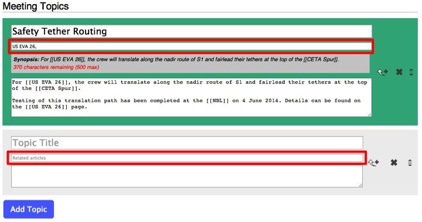Related Article
These show up in the Meeting Minutes output as links

It gets better ...
Related Article
This is our page about the Retractable Equipment Tether
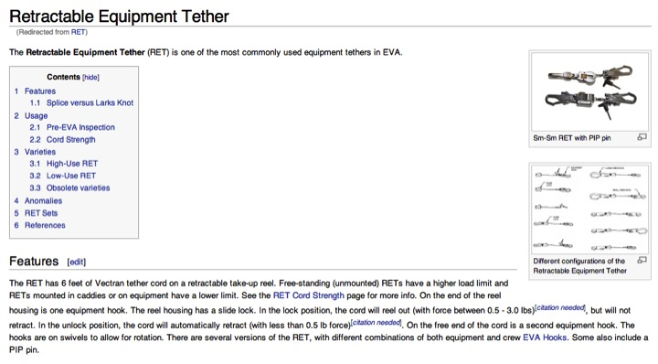Related Article
In the footer of every page, we list Meeting Minutes where that page was listed as a Related Article

Related Article
Extension:HeaderTabs and a query for meeting topics where the PAGENAME is listed as a Related Article tie information together smartly

Related Article
We use this same technique for hardware manifested on specific flights
 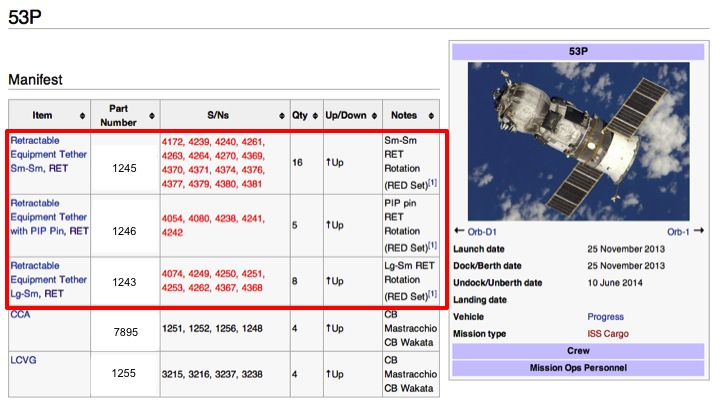
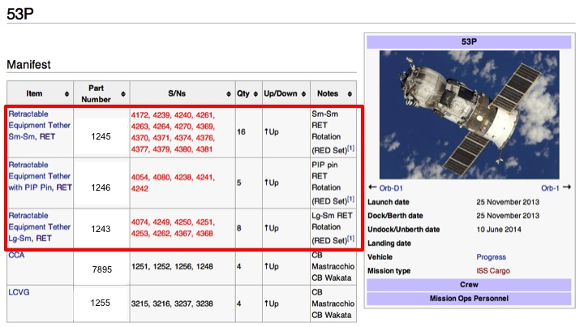
Related Article
We can link hardware to flights


Related Article
We can link rules to hardware
 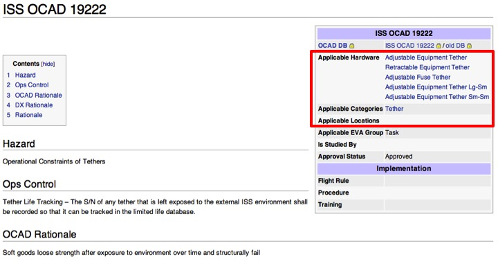
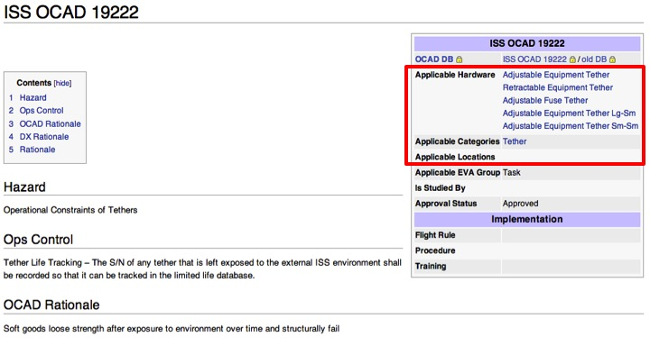
Related Article
We can run compound queries

Related Article
This helps identify rules we might have otherwise missed

Exposure
We have a lot of wiki pages tied together in different ways
- [[wiki links]]
- Semantic queries (inline, infobox, and footer)
- User queries
How can we better ensure our users are aware of pages they might be interested in?
Warrens and Plazas
Brandon Harris (Jorm_WMF) describes wikis as "warren-centric", where each wiki page is its own small, disconnected community
How do we connect these warrens? 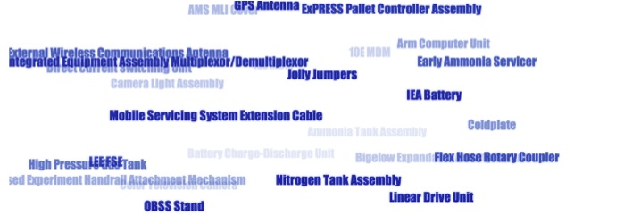
The Main Page Plaza
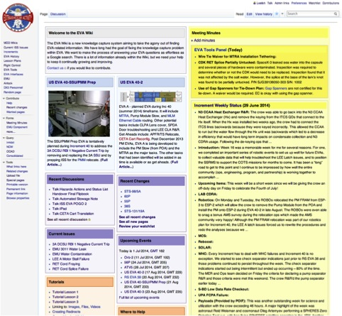The Main Page Plaza
- Extension:MasonryMainPage provides auto-sized blocks based on content and browser size
- Meeting Minutes is the focus
- Additional blocks provide relevant articles and queries

Meeting Minutes Block

- Link to form for new minutes
- Title links to full minutes
- Topics and synopses
Featured Articles
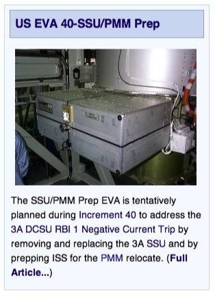
- Title links to article
- Primary image
- Overview
Current Issues
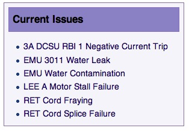This simple query lists pages in Category:Current ISS Issue
Upcoming Events
-
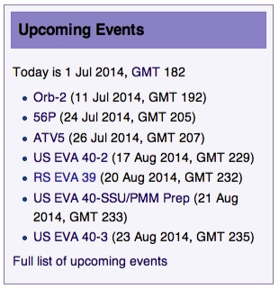
- Encourages users to contribute to events they are supporting
- Helps us ensure we are tracking the correct event dates (they change a LOT)
- Currently only lists vehicles and missions. Eventually will include training and on-orbit activities.
Recent Discussion and Changes
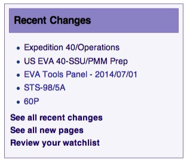 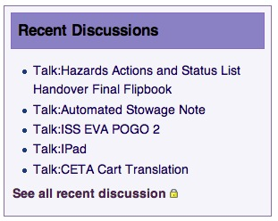These blocks highlight current discussions and are helpful for users not familiar with the "Recent Changes" page
Proficiency Training
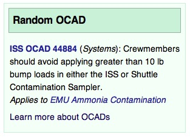 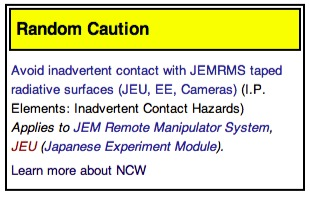Proficiency training is currently a manual process. With these blocks, users unknowingly get additional proficiency training and review our data.
In the future, we could track click-through of these types of boxes for proficiency training
A New Morning Routine
- Coffee
- Meeting Minutes
- Recent Changes
- Recent Discussion
- Watchlist
Now email is more focused on discussions and less on "documenting" technical info
The Future
In order to better connect users with unknown pages we can use semantic relations.
If a user watches a page which is linked to another page by semantic properties, we can suggest they watch that page
Main Page blocks could be customized based on the user viewing
Resources
GitHub.com/EnterpriseMediaWiki
Contacts
EnterpriseMediaWiki.org (github / @enterprisemw)
- James Montalvo (github / @jamesmontalvo3)
- Daren Welsh (github / @darenwelsh)
- Scott Wray (@stingwray)